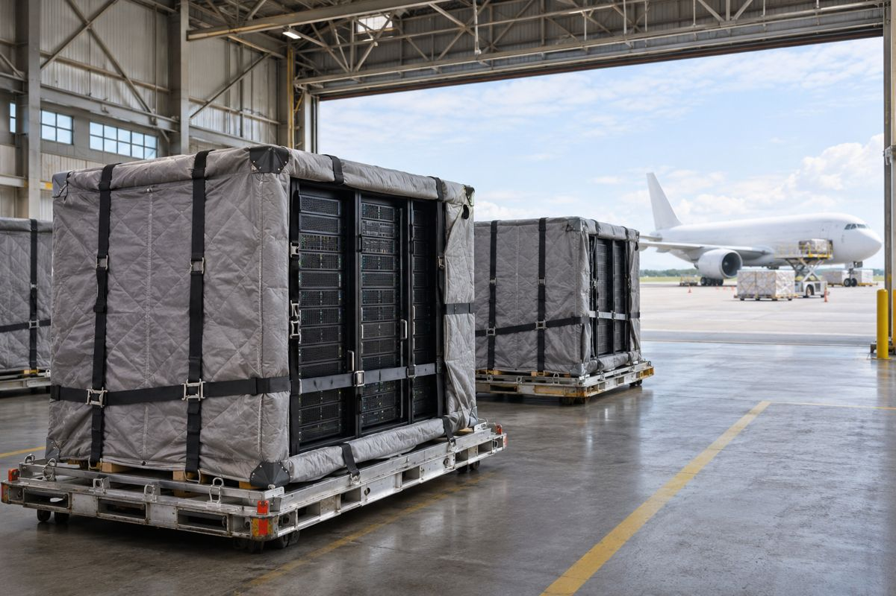

항공 화물 / EXPLAINED
에미레이트 스카이카고, AI 서버 운송 전용 상품 출시
서버 랙과 GPU 등 장비를 위한 우선 적재·전문 취급·운송 상태 추적을 묶었다. 데이터센터 일정에서 항공 운송이 맡는 역할을 살펴봤다.

11월 3일 출시된 AI Tech
에미레이트의 화물 부문 스카이카고가 11월 3일 AI 인프라 장비를 위한 항공 화물 상품 AI Tech 출시를 발표했다. 서버 랙, 반도체, GPU와 생산 장비를 대상으로 우선 적재, 전문 취급과 운송 단계 모니터링을 제공한다. 회사는 두바이의 통제 조직이 상태를 살피는 방식으로 설명했다. 발표의 중심은 AI 모델이 아니라 모델을 구동하는 물리적 장비의 이동이다.
서버 한 대와 랙 한 개의 차이
랙은 여러 서버와 관련 장비를 세로로 정리해 설치하는 구조다. 부품 단위로 보내는 화물과 랙 단위로 이동하는 장비는 포장, 중량 분포, 운반 공간이 달라질 수 있다. 항공기에 적재할 수 있는지는 장비의 총중량 외에 포장한 뒤의 높이와 폭, 들어 올리는 방법, 항공기 문과 바닥 조건에 영향을 받는다. 운송 단계별 추적은 각 인계 시점이 언제였는지 확인하는 데 쓰인다.
빠른 구간보다 예측 가능한 연결
편집부가 보는 핵심은 출발지와 목적지 사이에서 어디가 지연되었는지를 빨리 아는 것이다. 장비가 늦으면 도착 뒤 설치 인력, 시험 일정, 다른 장비 반입 순서도 바뀔 수 있다. 항공편 시간이 짧아도 통관이나 지상 인계가 길어지면 전체 프로젝트는 지연된다. 우선 적재와 통합 모니터링은 이 문제를 완화하려는 서비스 구성으로 해석할 수 있다. 계약마다 같은 결과를 낸다는 데이터는 발표에 제시되지 않았다.
운송계약에서 확인할 범위
발표일과 회사가 밝힌 출시일은 11월 3일이다. 실제 접수 여부는 경로, 기재, 포장과 화물 조건에 따라 확인해야 한다. 장비를 보내는 기업 입장에서는 우선 적재가 어느 구간에 적용되는지, 항공편 변경 시 인계 책임은 누구에게 있는지, 모니터링 기록을 어떻게 받는지가 상품명보다 중요하다. 요금, 보상 조건이나 보장 시간은 해당 계약에서 별도로 확인해야 한다.
일반 독자에게 보이는 변화
AI 경쟁에서 늘 거론되는 것은 계산 성능이지만, 장비가 필요한 시설에 제때 들어가야 그 계산 성능을 쓸 수 있다. 이번 상품은 고가 전자기기의 이동 자체가 데이터센터 건설 일정의 한 부분이 됐다는 점을 보여준다. 서버가 비행기에 실리는 짧은 순간보다 그 전후의 포장·인계·상태 확인이 서비스의 차이를 만드는 지점이다.
추적 기록을 어떻게 활용하나
장비가 어느 공항에 도착했는지와 설치 현장에 언제 넘겨졌는지는 서로 다른 정보다. 첫 번째는 항공 구간의 상태를 보여주고, 두 번째는 현장 일정이 실제로 시작될 수 있는지에 답한다. 일정 관리자는 출발·도착·인계처럼 기준이 되는 단계를 정하고, 예상 시각을 놓쳤을 때 다음 담당자에게 어떤 정보를 전달할지 미리 맞춰야 한다. 상품이 제공하는 데이터가 자체 물류 시스템에 어떤 형식으로 전달되는지까지 확인해야 기록을 운영에 활용할 수 있다.